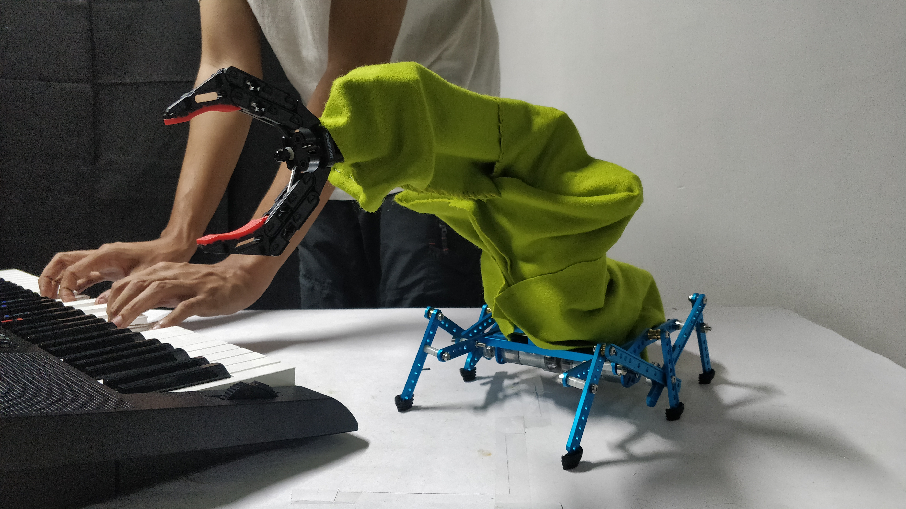
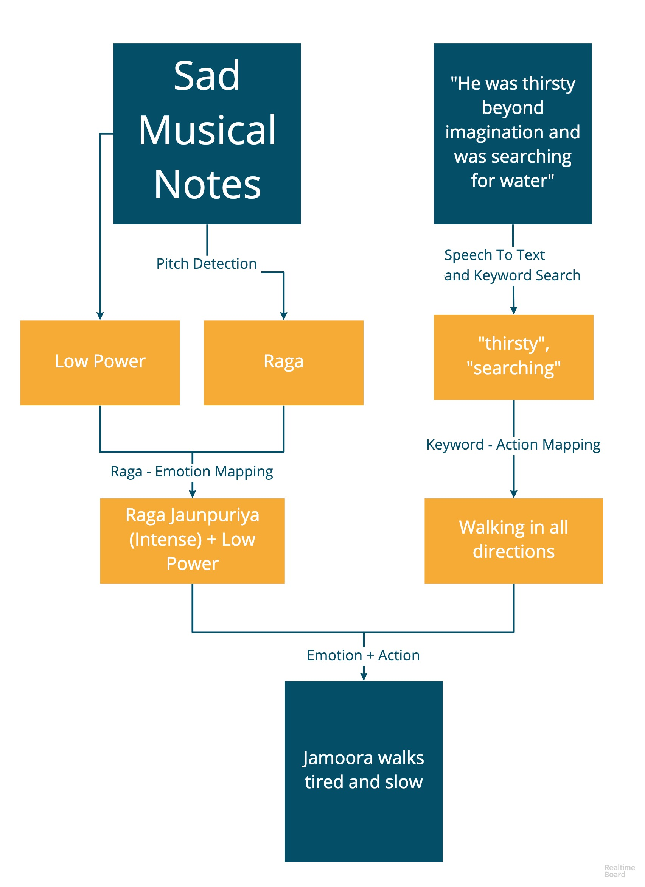

Jamoora
‘Jamoora’- a robotic puppet which can be used to tell stories in an exciting and fun manner. Jamoora can perform predefined actions (using a voice recognition system) while displaying a wide range of emotions - happiness, sadness, fear, anger, etc. (using a music recognition system). Puppetry is an ancient art form that animates our ideas. It can include narration of a story and employ music to depict the mood. These elements introduce the freedom to create subtle ideas which would otherwise be hard to express. We want to enable the puppeteer to combine multiple forms of expression to perform an act which would otherwise take multiple performers to accomplish. Raabta (meaning connection) is a system which controls a Jamoora’s moods through music and it’s actions by keywords woven into a narration.
The two means of input are music and story. In the first part, we receive the audio input from an Indian musical instrument through a microphone. This audio signal goes into the processing unit where sequence of musical notes is detected which corresponds to a particular raga. This raga and the power of the audio signal is associated with a body language. The script is read out which is simultaneously taken as an input from another microphone. This microphone sends the audio signal to the processing unit which converts it to text. We then do a keyword search and infer the motion requested.
The processing unit combines the motion trigger and the musical sentiment to make Jamoora go through a motion sequence with an appropriate body language. Figure on the left gives an example of the complete process of information flow for a sample scene. Many folktales involving the animation of animals and their emotions can be presented using such a mechanism.
Jamoora was one of the fifteen entries selected from all over the world to be showcased as part of the Student Innovation Contest at 31st ACM User Interface Software and Technology Symposium (UIST) held in Berlin, Germany and has been covered in many media outlets like The Indian Express.